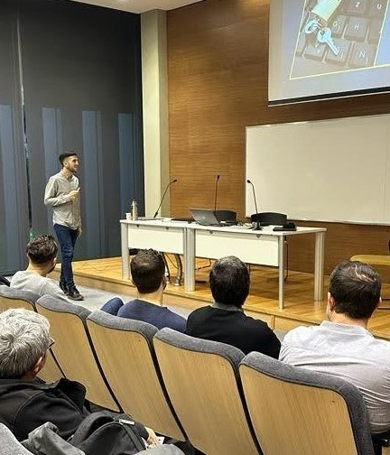

Un repaso sobre mi trayectoria
Actualmente lidero la estrategia de datos para la Tarjeta SUBE, uno de los sistemas transaccionales más grandes de la región (75M de operaciones diarias). Combino experiencia en dirección de equipos con un profundo conocimiento técnico en Analítica e Inteligencia Artificial para convertir datos complejos en decisiones de negocio medibles. Complemento mi visión de la industria con la docencia, formando profesionales en IA y conectando la práctica del sector con la vanguardia académica. En paralelo, investigo y desarrollo activamente la aplicación de IA en el mundo del deporte.
Academia
En 2009 obtuve el título de Licenciado en Ciencias de la Computación en la Facultad de Ciencias Exactas y Naturales de la Universidad de Buenos Aires (FCEN-UBA).
En 2024 conseguí el título de Magíster en Explotación de Datos y Gestión del Conocimiento (Ciencia de Datos e Inteligencia Artificial) en la Facultad de Ingeniería - Universidad Austral.
Laboral
Desde 2022, me desempeño como Gerente Data, Analytics & AI en Nación Servicios donde lidero la estrategia integral de datos y analítica, posicionando el área como pilar estratégico del negocio. Cuento con un equipo multidisciplinario de 30 profesionales distribuido en 6 áreas: Ingeniería de Datos, BI, Arquitectura, Ciencia de Datos, Gobierno y Calidad.
Anteriormente desempeñé roles de liderazgo en diversas áreas de Datos y Desarrollo dentro de la misma empresa y, durante mis inicios, comencé como desarrollador en empresas como Tecnet (para cliente Edenor), Sabre Holdings y Capgemini.

Docencia
En la actualidad, soy coordinador académico de posgrados del Departamento de Inteligencia Artificial de la Facultad de Ingeniería-Universidad Austral y también profesor invitado en el Centro de Estudios del Deporte-Universidad Austral y IAE Business School.
Durante 10 años ejercí diferentes cargos docentes en temas relacionados a Datos en universidades y centros de capacitación.
- 2015-2018: Jefe de Trabajos Prácticos-Profesor Interino en UADE.
- 2015-2018: Profesor en Educación IT (Oracle Tuning y PL/SQL)
- 2007-2014: Jefe de Trabajos Prácticos-Ayudante 1°-Ayudante 2° en Fac. de Cs. Exactas y Naturales-UBA.
Idiomas
- Inglés: Avanzado (First Certificate & CAE)
- Italiano: Avanzado (CLE 1 & 2)
- Francés: Básico (Ciclo Básico Completo - Alianza Francesa)
Conocimientos
- Python
- Machine Learning
- IA Generativa
- Power BI
- SQL Avanzado
- GCP (Big Query | Vertex AI)
- Java | HTML | Javascript | UNIX | Git | C++
- Metodologías Ágiles